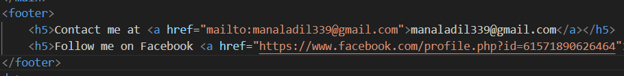

Div tag ka istemal HTML me block level elements ko group karne ke liye kiya jata hai. Ye tag kisi bhi content ko ek container me rakhne ke liye istemal hota hai. Iska koi specific meaning nahi hota, lekin ye CSS ke sath milkar layout design karne me madadgar hota hai is se agr apne ek pure section ko design karna ho to aap div tag ka istemal karte hain.HTML me hm is ke sirf containers bnate h.In simple words agr apne grup ko style krna h to aap div tag ka istemal karte hain.
<div>Ye ek div tag hai</div>
Span tag ka istemal inline elements ko group karne ke liye kiya jata hai. Ye tag kisi bhi content ko ek container me rakhne ke liye istemal hota hai. Iska koi specific meaning nahi hota, lekin ye CSS ke sath milkar layout design karne me madadgar hota hai is se agr apne sirf ek text ko design karna ho to aap span tag ka istemal karte hain.HTML me hm is ke sirf containers bnate h.In simple words agr apne sirf kuch text ko style krna h to aap span tag ka istemal karte hain.
LIKE THIS:
<span>Ye ek span tag hai</span>
Ye tag HTML ke header part ko define krta h .Is me ap apne code ka header part likhte h .Ye sirf code ko structure dene ke liye istamal hota h.SEO ke liye ta ke wo is ki ranking brhaye or search engines ko ye bataye ke ye header part hai.
Ye tag HTML ke main content area ko define krta h. Iska istemal page ke main content ko wrap karne ke liye kiya jata h. Ye tag bhi SEO ke liye important hota h kyunki ye search engines ko batata h ke ye page ka main content h.
Main tag is subdivided into:Section tag ka istemal HTML me ek section ko define karne ke liye kiya jata hai. Ye tag kisi bhi content ko ek section me rakhne ke liye istemal hota hai. jese ap apne aur apne dosto ke bare me kuch likh rhe h to phle ek section me apna likhte h aur phr 2sre sec me 2sre dost ka is trha se ye section tag istamal hota h.
Article tag ka istemal HTML me ek independent article ko define karne ke liye kiya jata hai. Ye tag kisi bhi content ko ek article me rakhne ke liye istemal hota hai.Agr ap koi story ya is trha ka kuch b likhte h to is tag me likhein ge.Ye tag SEO ke liye important hota h kyunki ye search engines ko batata h ke ye article ka main content h.
Aside tag ka istemal HTML me ek aside content ko define karne ke liye kiya jata hai. Ye tag kisi bhi content ko ek aside me rakhne ke liye istemal hota hai.ye CSS ke sath milkar layout design karne me madadgar hota hai.Agr ap isko html me likhe to koi change nhi aye ga lkn jb ap ise CSS ke sathn likhte h to ye side me a jata h jo ke SEO ko btata h ke ye additional info h .Jis trha hmari books me Do u know ka box hota h na blkl usi trha.
Footer tag ka istemal HTML me page ke footer part ko define karne ke liye kiya jata hai. Ye tag kisi bhi content ko ek footer me rakhne ke liye istemal hota hai. ye SEO ko btata h ke ye web ka footer part hai.
